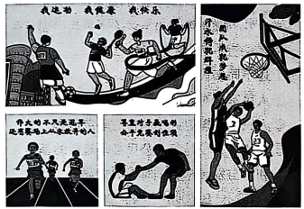
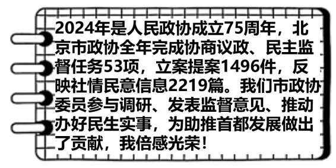
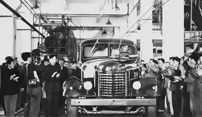

2025年北京市中考道德与法治真题 原卷解析
2025年北京市中考道德与法治真题
本试卷满分70分，考试时间70分钟。
一、判断题（本大题共10小题，每小题1分，共10分。在括号内相应位置，正确的写“正确”，错误的写“错误”）
1. 党的十八大以来，中国特色社会主义进入新时代，这是我国发展新的历史方位。（ ）
【答案】正确
【解析】
【详解】本题考查我国发展的历史方位。依据教材知识，党的十八大以来，中国特色社会主义进入新时代，这是我国发展新的历史方位。故题文说法正确。
2. 我们迈上了全面建设社会主义现代化国家新征程，以中国式现代化全面推进中华民族伟大复兴。（ ）
【答案】正确
【解析】
【详解】本题考查我国发展新阶段。依据教材知识，在我国全面建成小康社会、实现第一个百年奋斗目标之后，我们迈上了全面建设社会主义现代化国家新征程，向第二个百年奋斗目标进军，以中国式现代化全面推进中华民族伟大复兴，故题文说法正确。
3. 我国宪法是党的主张和人民意志的统一，是治国安邦的总章程。（ ）
【答案】正确
【解析】
【详解】本题考查宪法的地位。依据教材知识，我国宪法是党的主张和人民意志的统一，是治国安邦的总章程，故题文说法正确。
4. 国家安全关系人民幸福、社会发展进步，是实现国家利益最根本的保障，是民族复兴的根基。（ ）
【答案】正确
【解析】
【详解】本题考查国家安全 重要性。依据教材知识，国家安全是国家生存与发展的重要保障；国家安全是人民幸福安康的前提。国家安全关系人民幸福、社会发展进步，是实现国家利益最根本的保障，是民族复兴的根基，故题文说法正确。
重要性。依据教材知识，国家安全是国家生存与发展的重要保障；国家安全是人民幸福安康的前提。国家安全关系人民幸福、社会发展进步，是实现国家利益最根本的保障，是民族复兴的根基，故题文说法正确。
5. 五十六个民族，五十六朵花，五十六族兄弟姐妹是一家。我们要铸牢中华民族共同体意识。（ ）
【答案】正确
【解析】
【详解】本题考查维护民族团结。依据教材知识，我国是统一的多民族国家，五十六个民族，五十六朵花，五十六族兄弟姐妹是一家。我们要铸牢中华民族共同体意识，共同捍卫民族团结的祖国统一，故题文说法正确。
6. 无论是脑力劳动者还是体力劳动者，都是国家的建设者，都值得我们尊敬和学习。
【答案】正确
【解析】
【详解】劳动者兢兢业业、艰苦奋斗、无私奉献，成就了我们今天的美好生活。每个人所处的岗位不同，从事不同的劳动，但都在为国家和社会发展做出贡献。每一个劳动者都值得我们尊敬和学习，本题说法正确。
7. 小云在学校认真学习，体现她行使政治权利。（ ）
【答案】错误
【解析】
【详解】本题考查受教育权。 受教育既是公民的权利又是公民的义务。小云在学校认真学习，是正确行使受教育的权利，自觉履行受教育的义务，受教育权不属于政治权利，故题文说法错误。
8. 诚信是社会主义核心价值观和公民基本道德规范的重要内容，是中华民族的传统美德。（ ）
【答案】正确
【解析】
【详解】本题考查诚信的重要性。依据教材知识，诚信是社会主义核心价值观和公民基本道德规范的重要内容，是中华民族的传统美德；诚信也是一项民法原则。故题文说法正确。
9. 青少年要从小事做起，避免沾染不良习气，自觉遵纪守法，防患于未然。（ ）
【答案】正确
【解析】
【详解】本题考查预防犯罪的要求。依据教材知识，我们作为社会成员，要珍惜美好生活，认清犯罪危害，远离犯罪。预防犯罪，需要我们杜绝不良行为。我们应增强法治观念，依法自律，做一个自觉守法的人。 我们要从小事做起，避免沾染不良习气，自觉遵纪守法，防患于未然。故题文说法正确。
10. “要想了解自己，最好问问别人”，这句话告诉我们要通过自我评价来认识自己。（ ）
【答案】错误
【解析】
【详解】本题考查认识自己的方法。“要想了解自己，最好问问别人”，这体现了通过他人评价来认识自己。故题文说法错误。
二、选择题（本大题共10小题，每小题2分，共20分。在每小题给出的四个选项中，只有一项是最符合题目要求的）
11. 2025年是 暨世界反法西斯战争胜利80周年，这一胜利是正义战胜邪恶、光明战胜黑暗、进步战胜反动的伟大胜利。中国战场对世界反法西斯战争的胜利、维护世界和平作出了巨大贡献。（ ）
A. 南昌起义B. 红军长征C. 中国人民抗日战争D. 抗美援朝战争
【答案】C
【解析】
【详解】时政题，解析略。
12. 某同学与“人工智能”进行了如下对话。

这告诉我们，使用人工智能辅助学习时要（ ）
A. 发现并保持对学习兴趣B. 不断激发潜能，实现自我超越
C. 坚持独立思考，学会辨别筛选信息D. 传播网络正能量，慎重对待网上交友
【答案】C
【解析】
【详解】本题考查学会独立思考、理性参与网络生活。
C： “我虽然能高效处理大量信息，但也可能存在数据更新不及时、语境理解错误、图像识别不清等问题”这告诉我们使用人工智能辅助学习时要坚持独立思考，学会辨别筛选信息，故C正确；
ABD：这三个选项本身说法正确，但与题干主旨不符，故ABD不符合题意；
故本题选C。
13.
13.
他是一名“骑手”，为了实现年少时的诗歌梦，工作之余坚持创作，于街巷之中发现生活之美。如今他已出版诗集。 | 他是一名“棋手”，源于从小的热爱，更在于后来的坚持，他以无畏的勇气和精湛的技艺被誉为“‘棋’迹青年”。 | 他是一名“旗手”，在天安门广场观看升旗时播下了梦想的种子，这颗种子深深扎根、奋力生长。他如愿成为国旗护卫队的升旗手。 |
以上三个故事共同的主题是（ ）
A. 不断努力奋斗，实现人生梦想
B. 学会欣赏他人，敢于挑战权威
C. 积极改进规则，做到行己有耻
D. 正视自身不足，坚定职业选择
【答案】A
【解析】
【详解】本题考查实现梦想的相关知识。
A： “为了实现年少时的诗歌梦，工作之余坚持创作”“源于从小的热爱，更在于后来的坚持”“这颗种子深深扎根、奋力生长”都体现了不断努力奋斗，实现人生梦想，故A正确；
BCD：题干没有体现欣赏他人、改进规则、职业选择等内容，故BCD不符合题意；
故本题选A。
14. “我们应该向父母倾诉自己所有事情，还是选择性分享?”“与朋友产生分歧时，应该坚持自己的立场还是听从对方?”人际交往中我们可能会遇到很多类似的困惑。解决这些困惑的基本之道是（ ）
①保持个性，特立独行 ②一味迎合，一团和气
③平等尊重，换位思考 ④主动沟通，坦诚交流
A. ①②B. ①③C. ②④D. ③④
【答案】D
【解析】
【详解】本题考查尊重他人的要求。
①：保持个性、特立独行可能导致忽视他人感受，不利于解决矛盾，故①说法错误；
②：一味迎合会压抑自身合理需求，无法真正解决问题，故②说法错误；
③：平等尊重、换位思考是化解分歧的基础，能促进相互理解，故③符合题意；
④：主动沟通、坦诚交流有助于表达真实想法并达成共识，故④符合题意；
故本题选D。
15. 对以下名句的解读，正确的是（ ）
序号 | 名句 | 解读 |
① | 日省其身，有则改之，无则加勉 | 通过自省端正自己的行为 |
② | 不积跬步，无以至千里 | 每个人有不同的人生道路，每个人的生命都不可替代 |
③ | 友直，友谅，友多闻，益矣 | 我们要学会坦然接受一段友谊的淡出 |
④ | 师者，所以传道授业解惑也 | 老师是我们学习的指导者和成长的引路人 |
A. ①②B. ①④C. ②③D. ③④
【答案】B
【解析】
【详解】本题考查行己有耻的要求、生命的特点、友谊、师生交往的相关知识。
①：“日省其身，有则改之，无则加勉”强调自我反省的重要性，通过自省改进行为，解读正确，故①符合题意；
②：“不积跬步，无以至千里”强调积累的重要性，而解读将其曲解为“生命不可替代”，与原文无关，故②错误；
③：“友直，友谅，友多闻，益矣”强调结交正直、诚信、博学的朋友，与“接受友谊淡出”无关，故③错误；
④：“师者，所以传道授业解惑也”直接说明教师的职责，解读正确，故④符合题意；
故本题选B。
16. 践行“光盘行动”，行车礼让行人，做好垃圾分类……我们身边的文明行为正在悄然增多；以“柠檬黄”“志愿蓝”“平安红”等为代表的首都志愿者遍布城乡基层，“三原色”调和出了北京这座城市的动人色彩。围绕以上内容进行宣讲，可以采用的观点是（ ）
①自觉遵守规则，人人守护文明
②主动承担责任，索取物质回报
③奉献传递温暖，建设和谐社会
④他律重于自律，注重监督他人
A. ①③B. ①④C. ②③D. ②④
【答案】A
【解析】
【详解】本题考查社会规则、责任意识、奉献精神等知识。
①：题干中“光盘行动”“礼让行人”“垃圾分类”等行为体现自觉遵守规则，推动文明进步，故①符合题意；
②：志愿者服务强调奉献，而非“索取物质回报”，故②说法错误；
③：志愿者通过奉献传递温暖，促进社会和谐，与题干中“三原色调和城市动人色彩”呼应，故③符合题意；
④：题干强调自觉文明行为，体现自律的重要性，“他律与自律”都重要，故④说法错误；
故本题选A。
17. 作为行政机关的北京市市场监督管理部门广泛开展食品安全“你点我检”服务活动，2025年1—5月，已累计征集市民“点检”意见4.5万次，针对群众关注度较高的食品，完成针对性抽检1.8万批次，抽检结果信息通过政务网站及时公开发布。这体现北京市市场监督管理部门（ ）
A. 提升公正司法实效，回应民生关切B. 独立行使检察权，维护社会公平正义
C. 履行监察职能，保障食品安全D. 敢于担当，建设人民满意的服务型政府
【答案】D
【解析】
【详解】本题考查政府的职权和依法行政的要求。
A：公正司法是司法机关（如法院、检察院）的职责，而北京市市场监督管理部门属于行政机关，故A说法错误；
B：检察权由检察机关独立行使，行政机关无此职权，故B说法错误；
C：监察职能属于监察委员会（如反贪污腐败），题干中的食品安全抽检是市场监管职责，故C说法错误；
D：北京市市场监督管理部门通过征集民意、针对性抽检和信息公开，体现了主动担当、服务人民的宗旨，符合建设服务型政府的要求，故D符合题意；
故本题选D。
18. 军歌嘹亮。
“雄伟的井冈山，八一军旗红。开天辟地第一回，人民有了子弟兵……” “向前!向前!向前!我们的队伍向太阳，脚踏着祖国的大地，背负着民族的希望，我们是一支不可战胜的力量!” “国要强，我们就要担当，战旗上写满铁血荣光。将士们，听党指挥，能打胜仗，作风优良，不惧强敌，敢较量，为祖国决胜疆场。” |
上述不同年代的军歌，唱出了（ ）
①人民军队对党的赤胆忠心
②人民军队捍卫人民利益的坚定信念
③依法服兵役是每个公民必须履行的基本义务
④和平与发展是当今时代的主题
A. ①②B. ①④C. ②③D. ③④
【答案】A
【解析】
【详解】本题考查人民军队的性质与职责相关知识。
①：歌词中“开天辟地第一回，人民有了子弟兵”“听党指挥”等均体现人民军队对党的绝对忠诚，故①符合题意；
②：歌词“背负着民族的希望”“为祖国决胜疆场”等强调军队捍卫人民和国家利益的使命，故②符合题意；
③：依法服兵役是公民义务，但歌词未直接涉及此内容，故③不符合题意；
④：和平与发展是时代主题，但歌词未体现这一宏观主题，故④不符合题意；
故本题选A。
19. 2025年6月1日起，《中华人民共和国学前教育法》正式施行。至此，学前教育、义务教育、职业教育、高等教育均有了专门立法，我国教育领域立法日益完备。这表明（ ）
①我国为加快推进教育强国建设奠定坚实法治根基
②违反学前教育法的行为都应受到刑罚处罚
③发展学前教育是社会进步的基石，是引领发展的第一动力
④我国坚持依法治国的基本方略，积极推进社会主义法治建设
A. ①③B. ①④C. ②③D. ②④
【答案】B
【解析】
【详解】本题考查依法治国的相关知识。
①：教育领域立法完善为教育强国建设提供了法治保障，故①说法符合题意；
②：只有犯罪行为才会受到刑罚处罚，违反学前教育法的行为可能属于一般违法，不一定受刑罚，故②说法错误；
③：教育是社会进步的基石，创新是引领发展的第一动力，题干混淆了二者的作用，故③说法错误；
④：教育立法完善体现了依法治国的基本方略，符合法治建设要求，故④说法符合题意；
故本题选B。
20. 在“行万里路”中开阔眼界，在感悟“诗与远方”中收获成长，文旅活动持续火热；在户外空间里拥抱自然、挑战自我，骑行、越野、冰雪运动等广受追捧；在购物时关注商品提供的情绪体验，消费风向从“物质满足”扩展到“心灵抚慰”……从人们越来越“有滋有味”的生活里，可以看出（ ）
①情绪决定人们的健康水平和行为选择
②丰富的生活体验让我们的生命充满色彩与活力
③人的身份是在社会关系中确定的
④人民对美好生活的需要不断得到满足
A. ①③B. ①④C. ②③D. ②④
【答案】D
【解析】
【详解】本题考查亲社会行为、我国社会的主要矛盾。
①：情绪会影响健康和行为，但“决定”一词过于绝对，忽略了其他因素的作用，故①说法错误；
②：题干中人们通过文旅、运动等丰富生活，体现了生命因体验而多彩，故②符合题意；
③：人的身份由社会关系确定虽正确，但题干未涉及身份问题，与题意无关，故③不符合题意；
④：文旅、消费等变化反映人民追求更高层次需求，体现美好生活需要被满足，故④符合题意；
故本题选D。
三、非选择题（本大题共5小题，共40分）
21. 身上有汗，眼里有光。形式多样、内容丰富的班级体育联赛在北京市各中小学如火如荼地展开。师生们将这些赛事活动亲切地称为“班超”，并创作了宣传海报。

结合海报内容与自身体会，运用所学，写一段话为“班超”点赞。
要求：60字左右，不要出现校名和姓名。
【答案】示例：“班超”真的太棒了!参加“班超”让我更积极地锻炼身体，心情更加愉悦，培养了我战胜困难的勇气和坚持不懈的品质。让我和同学们有了更多的交流，增进了友谊，增强了合作意识，更多地感受到集体的温暖与力量，让我们的班集体更团结。同时，也让我认识到遵守规则、维护公平的重要性。
【解析】
【分析】考点考查：爱护身体、增强生命的韧性、共建美好集体的要求、正确对待竞争与合作、公平的重要性有关知识
能力考查：调动和运用知识，描述和阐述事物，论证和探究问题
核心素养：道德修养、健全人格
【详解】第一步：审设问，明确主体、作答范围及作答角度。
本题的设问主体为学生，需要运用爱护身体、增强生命的韧性、共建美好集体的要求、正确对待竞争与合作、公平的重要性的有关知识，从说明类习题的角度进行作答。
第二步：审材料，提取关键词，链接教材知识。
关键词①：我运动、我健康、我快乐→爱护身体的要求。
关键词②：伟大的不只是冠军，还有赛场上从未放弃的人→增强生命韧性的做法。
关键词③：汗水铸就辉煌，团队成就梦想→共建美好集体的要求。
关键词④：尊重对手赢喝彩，公平竞赛创佳绩→正确对待竞争与合作、公平的重要性。
第三步：整合信息，组织答案。
22. 直播需理性，维权有途径。
八年级学生小张在班级群发出一条信息：同学们，请大家帮忙!我昨天在餐馆正常用餐，看到有人直播，发现这位主播竟然把我当作直播背景，还对我评头论足，恶意丑化我的形象。我马上和他进行沟通，对方却说餐馆是公共场所，网络直播是他的自由。我该怎么办呢?
（1）结合材料，运用所学，请对主播的言行进行评析。
（2）请为小张解决这一问题提出一条合理建议。
【答案】（1）该主播的言行既是不道德的行为，也是违法行为。社会生活中，我们应该尊重他人的人格、权利，考虑他人的感受，该主播的言行是不尊重小张的体现。公民行使权利有界限，该主播的言行侵犯了小张的人格尊严，损害了小张合法的自由和权利。
（2）向家长、老师反映或寻求调解等。
【解析】
【分析】考点考查：人格尊严不受侵犯、依法行使权利、维权方式的有关知识
能力考查：调动和运用知识，描述和阐述事物，论证和探究问题
核心素养：道德修养、健全人格、法治观念
【小问1详解】
第一步：读题，提炼辩题。
观点：对方却说餐馆是公共场所，网络直播是他的自由。
第二步：根据所学知识和材料信息，判断观点正误
正误判断：错误。
论据①：该主播的言行既是不道德的行为，也是违法行为。
论据②：公民行使权利有界限，该主播的言行侵犯了小张的人格尊严。
第三步：整合信息，组织答案。
【小问2详解】
第一步：审设问，明确主体、作答范围及作答角度。
本题的设问主体为公民，需要运用维权方式的有关知识，从措施类习题的角度进行作答。
第二步：审材料，提取关键词，链接教材知识。
关键词：我昨天在餐馆正常用餐，看到有人直播，发现这位主播竟然把我当作直播背景，还对我评头论足，恶意丑化我的形象→向家长、老师反映或寻求调解。
第三步：整合信息，组织答案。
23. 笔记本书写大情怀。
作为人大代表，我要模范遵守宪法和法律、珍惜人民赋予我的权利。人大代表有责任、有义务反映人民的呼声，法律法规中加入了人大代表的声音，就是加入了人民群众的声音。如果说我撰写议案时有一个智囊团的话，那就是人民群众! |
人大代表的笔记本

政协委员的笔记本
近期重点工作： 1.社区居委会进行换届选举，在社区开展宣传活动。 2.向居民会议汇报过去一年的工作。 3.组织居民代表讨论关于私家车停放占用社区健身场地的问题，共同商议解决方案。 |
居委会主任的笔记本
结合材料，运用所学，撰写一篇80字左右的读后感。
【答案】示例：我从他们的笔记本中读出了宪法是根本活动准则，人大代表积极听取人民群众的意见，政协委员积极履职，居委会主任积极参与基层治理。他们努力为人民服务，也反映出我国的政治制度具有显著优越性，让我深刻认识到全过程人民民主是最广泛、最真实、最管用的民主。我也要积极参与民主生活，行使民主权利，增强民主意识。
【解析】
【分析】考点考查：宪法、人大代表的职权与义务、我国的政治制度、全过程人民民主的特点的有关知识
能力考查：调动和运用知识，描述和阐述事物，论证和探究问题
核心素养：政治认同
【详解】第一步：审设问，明确主体、作答范围及作答角度。
本题的设问主体为公民，需要运用宪法是根本活动准则、人大代表的职权与义务、我国的政治制度、全过程人民民主的特点的有关知识，从说明类习题的角度进行作答。
第二步：审材料，提取关键词，链接教材知识。
关键词①：作为人大代表，我要模范遵守宪法和法律→宪法是根本活动准则，人大代表积极听取人民群众的意见。
关键词②：政协委员的笔记本，居委会主任的笔记本→政协委员积极履职，居委会主任积极参与基层治理，反映出我国的政治制度具有显著优越性。
关键词③：社区居委会进行换届选举，在社区开展宣传活动→全过程人民民主的特点，积极参与民主生活，行使民主权利，增强民主意识。
第三步：整合信息，组织答案。
24. 某校策划举办“可爱的中国”展览，同学们提交了一些素材。
①站在“运河”看中国 昔日隋唐行舟处，今朝碧水荡清风。京杭大运河通州段，柳树枝繁叶茂、河水清澈见底，与两岸历史古迹交织成画，随处可见水清、岸绿、人欢。千百年来，大运河沿线积淀出丰富的文化遗产，已成为向全世界展示中华文化的符号。 |
②站在“草原”看中国 盛夏的敕勒川，草色青青，牧歌悠扬，重现了“天苍苍，野茫茫，风吹草低见牛羊”的诗意图景。塞北草原农牧民培育生态“颜值”，壮大产业“绿值”，实现了生态变绿、生产变强、生活变好的“三生共赢”。 |
③站在“故宫”看中国 故宫，坐落在北京城中轴线上，是中华优秀传统文化的汇聚地，是中华五千年文明的承载者。故宫举办“引进来”“走出去”的文物展览，持续开展文明交流互鉴活动，搭建起中华文明与其他文明交流对话的桥梁。 |
④站在“展会”看中国 湖北的高香茶、宁夏的锁鲜枸杞、贵州的香肠腊肉……乡村特色农产品香飘四溢。中国国际农业博览会等展会积极帮助企业开拓国内外市场，中国健康、绿色、优质的农产品，正以更加自信的姿态走向世界。 |
围绕上述素材如何使用，有同学提出了方案一。
方案一：我认为可以把素材③④组合在一起。 因为故宫开展世界文明交流互鉴活动；展会助力中国农产品走向世界。 它们都能体现中国坚持对外开放，自信拥抱世界。 |
结合材料，运用所学，请再提出两个不同方案。
方案二：我认为可以把素材________组合在一起。因为_______。 它们都能体现_________。 |
方案三：我认为可以把素材________组合在一起。因为_______。 它们都能体现 _________。 |
【答案】 ①. ①② ②. 大运河水清、岸绿、人欢；塞北草原实现了生态变绿、生产变强、生活变好的“三生共赢”。 ③. 中国坚持人与自然和谐共生，建设生态文明。 ④. ①③ ⑤. 大运河沿线积淀出丰富的文化遗产；故宫是中华五千年文明的承载者。 ⑥. 中华文化源远流长、博大精深。
【解析】
【分析】考点考查：坚持绿色发展、弘扬中华文化的有关知识
能力考查：调动和运用知识，描述和阐述事物，论证和探究问题
核心素养：政治认同
【详解】方案二：
第一步：审设问，明确主体、作答范围及作答角度。
本题的设问主体为公民，需要运用坚持绿色发展的有关知识，从分析类习题的角度进行作答。
第二步：审材料，提取关键词，链接教材知识。
关键词：站在运河看中国、站在草原看中国→把素材①②组合在一起+大运河水清、岸绿、人欢；塞北草原实现了生态变绿、生产变强、生活变好的“三生共赢”+体现中国坚持人与自然和谐共生，建设生态文明。
第三步：整合信息，组织答案。
方案三：
第一步：审设问，明确主体、作答范围及作答角度。
本题的设问主体为公民，需要运用弘扬中华文化的有关知识，从分析类习题的角度进行作答。
第二步：审材料，提取关键词，链接教材知识。
关键词：站在运河看中国、站在故宫看中国→把素材①③组合在一起+大运河沿线积淀出丰富的文化遗产；故宫是中华五千年文明的承载者+体现中华文化源远流长、博大精深。
第三步：整合信息，组织答案。
25. “从第一辆解放牌汽车到今天的新能源汽车”，让我们展开想象，跟随小记者一起感受中国汽车工业从无到有、从弱到强的恢弘篇章!
采访记录 |
★“解放牌汽车”，您是咱们国家第一辆国产汽车。我手里有这样一张老照片，请您给我们讲讲它背后的故事吧! |
 当年，新中国刚刚成立，国家决定建设汽车工业基地。来自五湖四海、各行各业的建设者们积极响应党中央号召，为了国家需要，毅然决然奔赴建设一线。在资源极度匮乏、环境极端恶劣的条件下，他们白手起家、日夜奋战、攻坚克难，以“我们也要造自己的汽车”的豪情壮志，在一片荒芜大地上创造了中国汽车工业史上的奇迹。终于，我在1956年7月13日成功驶下装配线。从这一天起，我国结束了不能制造汽车的历史! |
★“中国智造”“引领浪潮”，我查到了一些和您有关的关键词。“新能源汽车”，您能给大家介绍一下吗? |
我是中国新能源汽车，是中国智造的一张新名片，2024年就有一千多万个“我”驶下生产线，连续十年产销量全球第一。技术独创的动力电池是我强劲的“心脏”，世界领先的智能化系统是我聪明的“大脑”。我的成功崛起离不开成千上万研发和技术人员的科研攻关，得益于中国教育事业的有力支撑，越来越多的我跑在大街小巷、城镇乡村，搭载着千家万户的幸福；越来越多的我“驶向”全球，引领汽车产业转型发展浪潮，为建设一个共同繁荣、清洁美丽的世界贡献中国智慧。 |
★“解放牌汽车”，您眼神中透露出对这位后起之秀的喜爱，从他的介绍中您看到了祖国哪些变化? |
解放牌汽车： |
★“新能源汽车”，听了“解放牌汽车”讲的故事，您认为新时代汽车工业建设者们应该从前辈身上继承些什么? |
新能源汽车： |
★从“造不了”到“造得出”再到“造得好，中国汽车工业步履不停，我们正昂首阔步行进在实现中华民族伟大复兴的道路上，最后，请两位思考一下，共同送上一句话作为采访的结束吧! |
两位共同： |
结合材料，运用所学，以“解放牌汽车”和“新能源汽车”的身份，回答小记者的提问，形成一篇完整的采访记录。
【答案】示例：解放牌汽车：真是没想到，祖国的发展让我惊叹不已!科技创新能力超越我的想象，人民生活蒸蒸日上，人才队伍不断壮大，教育水平显著提高。今天我们能有这么多汽车出口，祖国在世界舞台上的模样令我骄傲和自豪!
新能源汽车：当年的场而真令我动容。正是前辈们的奠基，才有我们今天的成就，我们要继续坚定不移听党话、跟党走，坚持国家利益至上，继承前辈们艰苦奋斗的精神，自立自强，加大科技创新，创造新辉煌!
两位共同：希望广大青少年勇担时代使命，祝福我们伟大祖国繁荣昌盛!
【解析】
【分析】考点考查：感受国家发展、建成世界科技创新强国的要求、少年担当、发扬实干精神、坚持国家利益至上的有关知识
能力考查：调动和运用知识，描述和阐述事物，论证和探究问题
核心素养：政治认同、责任意识
【详解】第一步：审设问，明确主体、作答范围及作答角度。
本题的设问主体为学生，需要运用感受国家发展、建成世界科技创新强国的要求、少年担当、发扬实干精神、坚持国家利益至上的有关知识，从分析类习题的角度进行作答。
第二步：审材料，提取关键词，链接教材知识。
关键词①：以“我们也要造自己的汽车”的豪情壮志，在一片荒芜大地上创造了中国汽车工业史上的奇迹，从他的介绍中您看到了祖国哪些变化→感受国家发展、建成世界科技创新强国的要求。
关键词②：您认为新时代汽车工业建设者们应该从前辈身上继承些什么?成功崛起离不开成千上万研发和技术人员的科研攻关，得益于中国教育事业的有力支撑→坚持国家利益至上，发扬实干精神。
关键词③：我们正昂首阔步行进在实现中华民族伟大复兴的道路上，共同送上一句话→少年担当。
第三步：整合信息，组织答案。